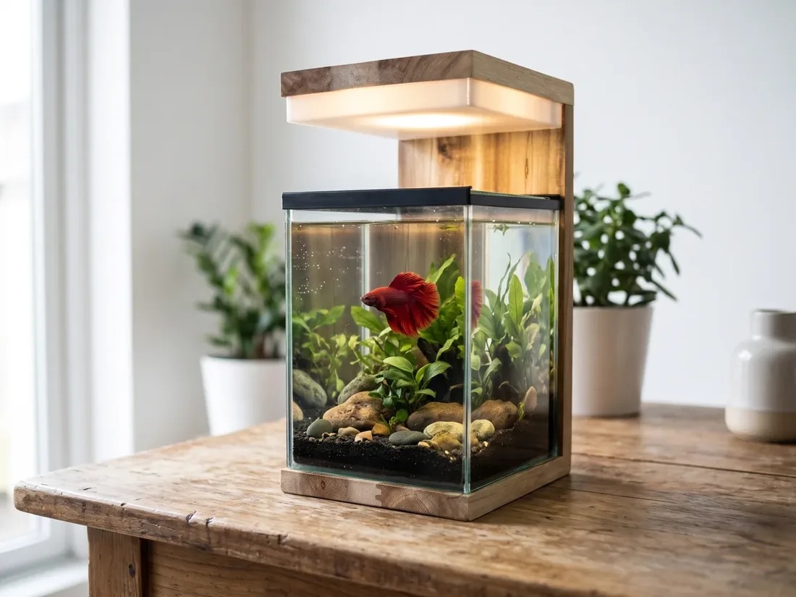
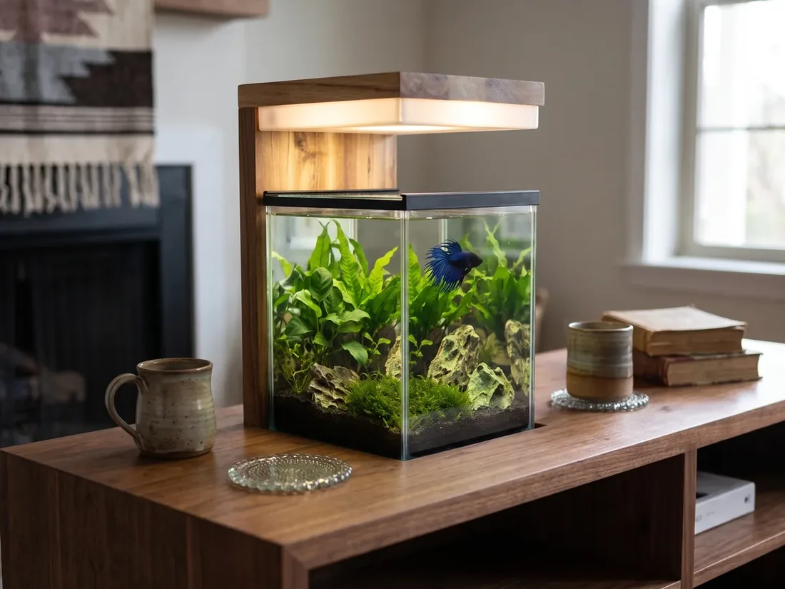
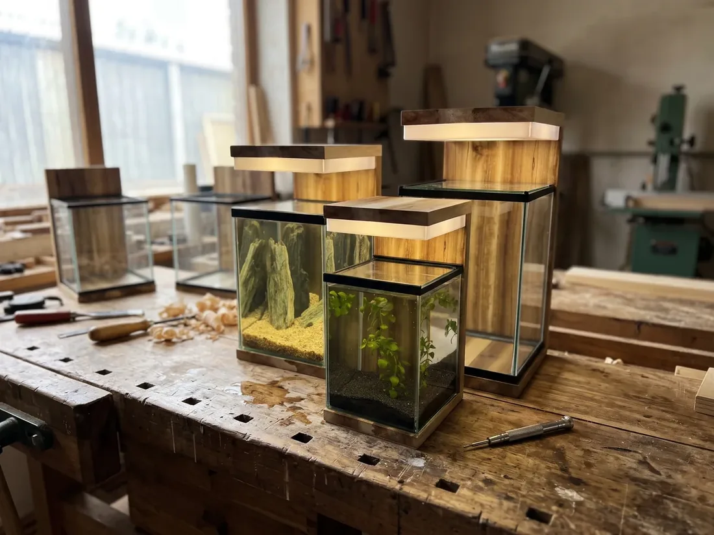
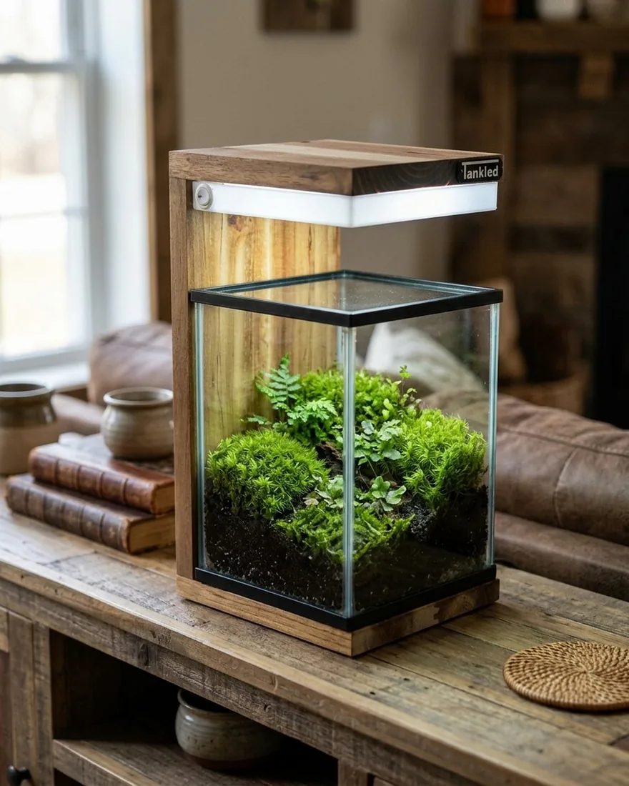

Batıkent akvaryum: Batıkent'te el yapımı ahşap akvaryum, teslimat ve kurulum

Batıkent akvaryum arayanlar için en büyük avantaj, Tankled atölyesinin hemen yanı başında olmasıdır: Ostim, Batıkent'in komşusu. Doğal ahşaptan el yapımı akvaryumlarımızı atölyede görebilir, Batıkent'teki evinize eve teslimat ve yerinde kurulum hizmetiyle alabilirsiniz.
Batıkent'te akvaryum alırken nelere bakmalı?
Batıkent'te kooperatif ve site daireleri yaygındır; salonlar genellikle balkonla birleşir ve gün boyu bol ışık alır. Bu yüzden akvaryumun yeri seçilirken üç noktaya dikkat edin:
- Işık: Akvaryumu balkon kapısının ya da pencerenin tam önüne koymayın. Doğal güneş yosunu hızlandırır; akvaryumun kendi LED ışığı yeterlidir.
- Zemin: Su dolu bir akvaryum litre başına yaklaşık 1 kg gelir. Eski bir sehpa yerine akvaryumla birlikte tasarlanmış bir gövde kullanın; ayrıntılar akvaryum sehpası ölçüleri yazımızda.
- Priz ve erişim: Akvaryumun üstünde bakım için 15–20 cm boşluk ve yakında bir priz olmalı.
Batıkent'e uygun Tankled modelleri
- Betta Serisi (14 × 14 × 20 cm): Komodin, masa ya da kitaplık rafı için; üç ışık tonlu LED. Betta akvaryumu sayfasında ayrıntılar.
- Nano Serisi: Biraz daha geniş bir bitkili akvaryum isteyenler için; bakım ipuçları nano akvaryum bakımı yazımızda.
- Mobilyalı ve özel ölçü: Salon nişine ya da TV ünitesine tam oturan mobilyalı akvaryum.
- Aydınlatma: Mevcut akvaryumunuz için 30–40 cm ince alüminyum LED aydınlatma barı.
Batıkent'te balkon ve salon için fikirler
Batıkent'te pek çok salon kapalı balkonla birleşiktir. Bu alanı doğrudan güneş almayan bir köşesinde ışıklı bir teraryum ya da bitkili nano akvaryumla değerlendirebilirsiniz. Akşamları 3000K sıcak ışıkta akvaryum, salonda dekoratif bir abajur gibi görünür; gündüz 6500K gün ışığıyla bitkiler büyür. Çocukların odasında ise bir betta balığı, sorumluluk duygusunu öğreten küçük ve sakin bir arkadaştır. Fikirler için dekoratif abajur fikirleri yazımıza bakabilirsiniz.
Batıkent'e teslimat ve yerinde kurulum
Batıkent'teki adresinize teslim ediyor, akvaryumu yerinde kuruyoruz. Kurulumda zemini, bitkileri ve ekipmanı yerleştiriyor, suyu dolduruyoruz; isteyene hazır kurulum seti sunuyoruz. Atölyemiz çok yakın olduğu için kurulumdan sonra bakım sorularınızda da hızlıca destek olabiliyoruz.
Sık sorulanlar
Batıkent'e teslimat ve kurulum yapıyor musunuz? Evet, Batıkent'e eve teslimat ve yerinde kurulum yapıyoruz.
Batıkent'ten atölyeye nasıl gelirim? Atölyemiz Ostim OSB, 100. Yıl Bulvarı'nda; pazartesi–cumartesi 10:00–16:00 arası açığız.
Bitkili akvaryum kurmak zor mu? Hayır; kolay bitkilerle başlamak için bitkili akvaryum kurulumu rehberimize bakın.
Batıkent'e en yakın akvaryum atölyesi
Batıkent'ten birkaç dakikalık yoldaki atölyemiz Ostim OSB, 100. Yıl Bulvarı'nda; pazartesi–cumartesi 10:00–16:00 arası ziyaret edebilirsiniz. Ölçü almak, ahşap tonu seçmek ya da sadece akvaryumları incelemek için uğrayın; sipariş için WhatsApp'tan da yazabilirsiniz.
Ankara'da el yapımı akvaryum
Ostim'deki atölyemizde doğal masif ahşaptan mobilyalı ve dekoratif akvaryumlar üretiyoruz. Türkiye'nin 81 iline ve yurt dışına kargo yapıyoruz. Ölçünüze özel tasarım için bize ulaşın.
WhatsApp ile yazın Koleksiyonu inceleyinDiğer yazılar

Eryaman akvaryum: Eryaman'da ahşap ve mobilyalı akvaryum, teslimat ve kurulum
Eryaman akvaryum arayanlara: el yapımı ahşap ve mobilyalı akvaryum, betta ve nano akvaryum. Eryaman ve Etimesgut'a eve teslimat ve yerinde kurulum.
Devamını oku →
Yenimahalle akvaryum: Ostim atölyemizden el yapımı akvaryum, teslimat ve kurulum
Yenimahalle akvaryum: Ostim OSB'deki atölyemizde üretilen ahşap, mobilyalı ve betta akvaryumlar. Yenimahalle'ye eve teslimat ve yerinde kurulum.
Devamını oku →
Sincan akvaryum: Sincan'da ahşap akvaryum, teraryum, teslimat ve kurulum
Sincan akvaryum arayanlara: el yapımı ahşap akvaryum, betta akvaryumu, teraryum ve paludaryum. Sincan'a eve teslimat ve yerinde kurulum.
Devamını oku →